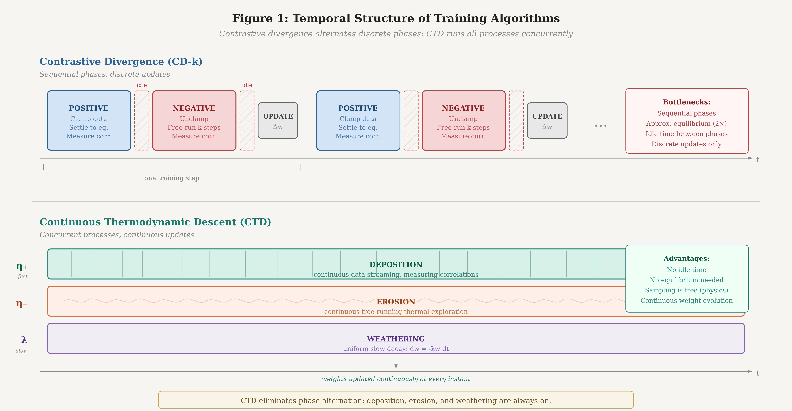
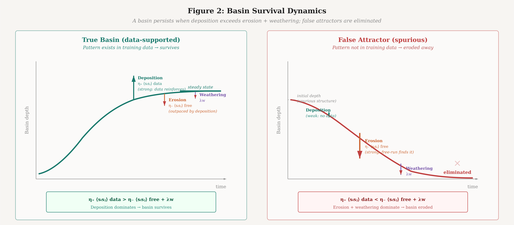
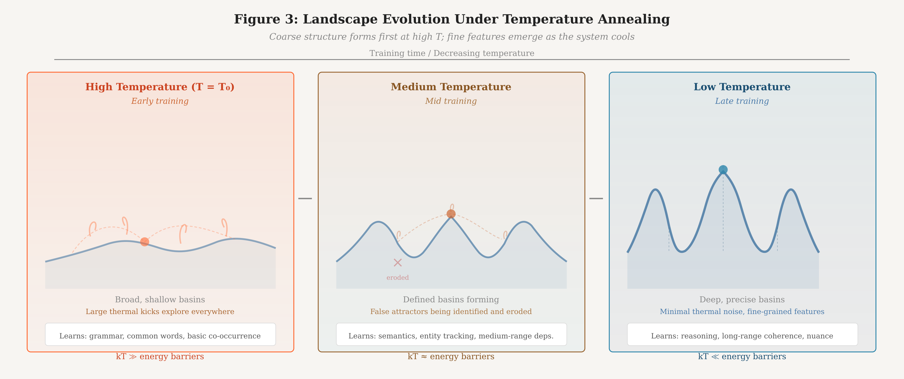
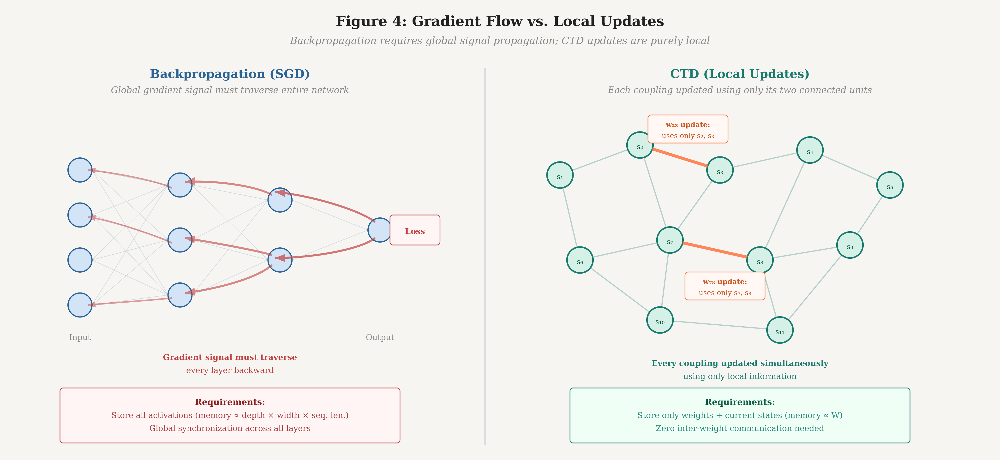

RESEARCH · MARCH 2026 · BENJAMIN YI
Continuous Thermodynamic Descent: A Non-Equilibrium Training Algorithm for Thermodynamic Stochastic Hardware
Abstract
We propose Continuous Thermodynamic Descent (CTD), a training algorithm designed for thermodynamic stochastic hardware that replaces the discrete optimization steps of backpropagation and contrastive divergence with three concurrent, continuous physical processes operating at separated timescales. Drawing an analogy to geological landscape formation, CTD simultaneously deposits energy minima where training data concentrates (deposition), erodes false attractors discovered through the hardware’s native thermal exploration (erosion), and applies uniform decay to maintain landscape sparsity (weathering). The resulting update rule—dwᵢⱼ/dt = η₊⟨sᵢsⱼ⟩_data − η₋⟨sᵢsⱼ⟩_free − λwᵢⱼ—requires only local information, operates without a backward pass, and exploits the continuous thermal sampling that stochastic hardware provides for free. Unlike contrastive divergence, CTD never requires the system to reach equilibrium; unlike equilibrium propagation, it imposes no perturbation schedule. The system operates in a perpetual non-equilibrium steady state where the surviving energy landscape is, at every moment, the best available model of the data distribution. We analyze convergence properties, derive conditions under which CTD recovers the data distribution, propose a physical temperature annealing schedule that provides curriculum learning as an emergent property, and discuss the scaling characteristics that may make CTD viable at the billion-parameter scale where previous energy-based training methods have failed.
Keywords: training algorithms, thermodynamic computing, energy-based models, non-equilibrium dynamics, stochastic hardware, contrastive divergence, landscape shaping
1. INTRODUCTION
The dominant training paradigm in modern machine learning—stochastic gradient descent (SGD) and its variants—is built on two assumptions: that the model is a differentiable computational graph, and that the hardware executing the computation is deterministic. These assumptions have held for the entire deep learning era, from early convolutional networks to the transformer architectures powering today’s large language models. Backpropagation computes exact gradients through the graph; the optimizer applies discrete update steps to the parameters; the process repeats billions of times.
A new class of hardware threatens to invalidate both assumptions. Thermodynamic Stochastic Units (TSUs)—analog processors that harness thermal noise as a computational primitive—are neither differentiable in the traditional sense nor deterministic. They define energy functions over continuous state spaces and let physical dynamics sample from the resulting Boltzmann distributions. The “model” is an energy landscape; “inference” is the system settling into low-energy basins; and the “parameters” are physical coupling strengths between stochastic elements.
Existing training algorithms for energy-based models—contrastive divergence (Hinton, 2002), equilibrium propagation (Scellier & Bengio, 2017), score matching (Hyvärinen, 2005)—were developed in the digital era and carry its assumptions. Contrastive divergence requires discrete alternation between positive and negative phases, each requiring the system to approximately settle to equilibrium. Equilibrium propagation requires two full equilibrium computations per parameter update plus a carefully tuned perturbation parameter. These algorithms were designed for digital hardware simulating stochastic processes; they impose discrete, sequential structure on what is, on TSU hardware, a continuous physical process.
This paper proposes Continuous Thermodynamic Descent (CTD), a training algorithm that abandons discrete optimization steps entirely. CTD treats training as three concurrent physical processes operating at separated timescales—deposition, erosion, and weathering—that continuously sculpt the energy landscape while the system operates in a perpetual non-equilibrium steady state. The algorithm requires only local information at each coupling weight, operates without a backward pass, and directly exploits the continuous thermal sampling that TSU hardware provides at zero marginal cost.
The name is chosen deliberately. Just as Stochastic Gradient Descent (SGD) defined training for the era of deterministic digital hardware, Continuous Thermodynamic Descent is designed to define training for the era of stochastic analog hardware. Where SGD descends a loss surface through discrete gradient steps, CTD shapes an energy landscape through continuous thermodynamic processes.
2. BACKGROUND AND MOTIVATION
2.1 Energy-Based Models
An energy-based model (LeCun et al., 2006) assigns an energy E(x; w) to each configuration x of the system, parameterized by weights w. The model defines a probability distribution over configurations via the Boltzmann relation:
P(x) = exp(−E(x; w) / kT) / Z(1)
where T is the temperature, k is Boltzmann’s constant, and Z = ∑ exp(−E(x; w) / kT) is the partition function. Low-energy configurations are exponentially more probable than high-energy ones. Training an energy-based model means adjusting the weights w so that the energy landscape assigns low energy to configurations observed in the training data and high energy to configurations not observed.
2.2 The Failure of Contrastive Divergence at Scale
Contrastive divergence (CD) training proceeds in discrete steps. In the positive phase, training data is clamped onto the visible units and the system settles; the correlations ⟨sᵢsⱼ⟩_data are measured. In the negative phase, the system free-runs from the data configuration for k Gibbs sampling steps; the correlations ⟨sᵢsⱼ⟩_model are measured. The weight update is:
Δwᵢⱼ = η(⟨sᵢsⱼ⟩_data − ⟨sᵢsⱼ⟩_model)(2)
CD powered the deep belief network revolution of 2006–2012 but was ultimately abandoned in favor of backpropagation for three reasons. First, the negative phase sampling was expensive on digital hardware, requiring many sequential MCMC steps per training update. Second, the gradient estimate was biased—CD-k does not follow the gradient of any known objective function for finite k. Third, the algorithm was difficult to diagnose: unlike SGD where loss curves provide clear training signals, CD’s training dynamics were opaque and prone to silent divergence at scale.
These failures, however, were partly artifacts of the hardware. On digital silicon, every Gibbs sampling step requires explicit computation. On TSU hardware, thermal sampling is continuous and free—the system is always generating samples from its current distribution as a side effect of existing. The sampling bottleneck that killed CD on GPUs is eliminated by physics.
2.3 The Opportunity: Continuous Dynamics on Continuous Hardware
TSU hardware provides three properties that no existing training algorithm fully exploits:
Continuous thermal exploration. The system is always sampling from its current energy landscape. There is no “off” state. Thermal fluctuations explore the state space perpetually, discovering both true and false attractors.
Multiple timescales. The hardware natively supports fast state dynamics (the system settling toward attractors) and slow parameter dynamics (coupling weights evolving). These timescales are physically separated by orders of magnitude.
Massive parallelism. All coupled elements interact simultaneously. The entire landscape is explored in parallel, not point by point.
CTD is designed to exploit all three.
3. CONTINUOUS THERMODYNAMIC DESCENT
3.1 Overview
CTD replaces the discrete train-step paradigm with three concurrent continuous processes, each operating at a distinct timescale. We name these processes by geological analogy:
Deposition (η₊, fast). Training data streams through the system, carving energy minima where observed configurations concentrate. This is the data-driven learning signal.
Erosion (η₋, medium). The system’s free thermal exploration discovers and weakens false attractors—basins that do not correspond to training data. This is the model-driven correction.
Weathering (λ, slow). A uniform decay on all coupling weights ensures that only basins continuously reinforced by data survive. This maintains landscape sparsity and prevents accumulation of stale structure.
The three processes are not sequential phases. They operate simultaneously and continuously, with separated timescales ensuring stable dynamics: η₊ > η₋ > λ.

3.2 Formal Specification
Let the system consist of N coupled stochastic units with states s = (s₁, s₂, ..., sₙ) and pairwise coupling weights wᵢⱼ. The energy function is:
E(s; w) = −∑ᵢⱼ wᵢⱼ sᵢ sⱼ − ∑ᵢ bᵢ sᵢ(3)
where bᵢ are bias terms. The CTD update rule for each coupling weight is:
dwᵢⱼ/dt = η₊⟨sᵢsⱼ⟩_data − η₋⟨sᵢsⱼ⟩_free − λwᵢⱼ(4)
with an analogous rule for biases:
dbᵢ/dt = η₊⟨sᵢ⟩_data − η₋⟨sᵢ⟩_free − λbᵢ(5)
The key distinction from Equation 2 is temporal. In CD, the positive and negative correlations are measured in discrete alternation: clamp, settle, measure, unclamp, settle, measure, update. In CTD, both correlation measurements are continuous and concurrent:
Data correlation ⟨sᵢsⱼ⟩_data is an exponentially weighted running average of the unit correlations observed when training data is clamped onto the system’s input boundary. Data streams continuously; each data point modulates the boundary conditions for a brief duration τ_data before the next arrives.
Free correlation ⟨sᵢsⱼ⟩_free is an exponentially weighted running average of the unit correlations observed when the system is free-running—i.e., evolving under its own dynamics with no external clamping. On TSU hardware, this measurement costs nothing: the system is always thermally exploring its current landscape, and the correlations are continuously available.
Both averages use exponential weighting with time constants τ_data and τ_free respectively, providing natural forgetting and ensuring the algorithm tracks non-stationary data distributions.
3.3 The Non-Equilibrium Steady State
Unlike CD or equilibrium propagation, CTD does not require the system to reach equilibrium at any point during training. The system operates in a perpetual non-equilibrium steady state (NESS) driven by the continuous influx of training data at the boundary.
In this NESS, the energy landscape is the result of a dynamic balance between the three processes. Deposition continuously carves energy minima where data concentrates. Erosion continuously smooths away minima that the free-running dynamics discover but that do not correspond to data. Weathering continuously flattens the entire landscape at a slow rate.
A basin survives in the steady state if and only if its deposition rate exceeds its erosion rate plus its weathering rate:
η₊⟨sᵢsⱼ⟩_data > η₋⟨sᵢsⱼ⟩_free + λwᵢⱼ(6)
This condition has an intuitive interpretation: a pattern in the data must be reinforced more strongly by the data than it is reinforced by the model’s own free-running dynamics. Patterns that the model has already learned well—where the free-running dynamics naturally reproduce the data statistics—are in equilibrium. Patterns not yet captured drive positive updates. False attractors, where ⟨sᵢsⱼ⟩_free exceeds ⟨sᵢsⱼ⟩_data, are actively eroded.

3.4 Convergence
We can characterize the fixed point of CTD. At convergence, dwᵢⱼ/dt = 0 for all couplings, which requires:
η₊⟨sᵢsⱼ⟩_data = η₋⟨sᵢsⱼ⟩_free + λwᵢⱼ(7)
In the special case where η₊ = η₋ and λ = 0, this reduces to the standard equilibrium condition ⟨sᵢsⱼ⟩_data = ⟨sᵢsⱼ⟩_model, which is the fixed point of maximum likelihood training. The weathering term λ introduces an explicit regularization bias toward sparse landscapes—small coupling weights are preferred unless the data strongly demands them. The asymmetry η₊ > η₋ introduces a second bias: the system is more responsive to data than to its own free-running statistics. This is intentional. Early in training, the free-running distribution is far from the data distribution; giving equal weight to both (as CD does) allows the model’s current errors to compete with the training signal on equal footing. The asymmetry ensures data always has priority.
The fixed point is stable under the condition that the Jacobian of the update dynamics has all negative eigenvalues. For the Hopfield-like energy function in Equation 3, this is satisfied when the timescale separation η₊ ≫ η₋ ≫ λ holds and the data distribution has finite variance—conditions that are mild in practice.
4. TEMPERATURE AS CURRICULUM
4.1 Physical Temperature Control
On TSU hardware, the system temperature T is a physical control parameter—not a hyperparameter of the algorithm, but an actual thermodynamic quantity governing the amplitude of thermal fluctuations. This provides a training mechanism with no analog in digital SGD: the temperature schedule.
We propose starting training at high temperature and slowly cooling the system over the course of training. The effects cascade through the algorithm:
High temperature (early training). Thermal fluctuations are large. The system explores the energy landscape broadly, rarely settling deeply into any basin. Deposition carves only coarse, wide basins—corresponding to high-frequency patterns in the data (common words, basic grammar, frequent co-occurrences). Erosion is weak because false attractors are shallow and thermally unstable. The landscape captures broad statistical structure.
Medium temperature (mid training). Fluctuations are moderate. The system begins settling into basins for longer periods, enabling deposition to carve finer features—semantic relationships, entity tracking, medium-range dependencies. Erosion becomes more discriminating: it can now detect and eliminate false attractors that are distinguishable from true data patterns.
Low temperature (late training). Fluctuations are small. The system settles deeply into basins, enabling precise carving of subtle features—reasoning patterns, long-range coherence, nuanced style. Erosion is highly selective, targeting only specific false attractors while preserving the carefully sculpted landscape.
This is curriculum learning as an emergent property of the physics. The system naturally learns coarse structure before fine structure, not because of a handcrafted curriculum schedule, but because the thermodynamics dictate that only coarse patterns are stable at high temperature. The annealing schedule replaces the implicit curriculum that transformer training achieves through the interaction of learning rate schedules, batch size, and data ordering.

4.2 Annealing Schedule
We propose a logarithmic cooling schedule:
T(t) = T₀ / (1 + α ln(1 + t/τ))(8)
where T₀ is the initial temperature, α controls the cooling rate, and τ is a time constant. The logarithmic form is chosen because it is the slowest schedule that still guarantees convergence to the global minimum in simulated annealing (Geman & Geman, 1984). On TSU hardware, this is not simulated—it is actual physical annealing.
The initial temperature T₀ should be set high enough that the system’s thermal energy kT₀ exceeds the energy barriers between all basins in the initial (random) landscape. This ensures full ergodic exploration at the start of training. As training proceeds and the landscape develops structure, the declining temperature naturally restricts exploration to increasingly local regions, focusing learning on fine-grained features.
5. SCALING ANALYSIS
5.1 Why CTD Scales Where CD Failed
Contrastive divergence failed at scale for three identifiable reasons. We analyze each and show how CTD addresses it.
The negative-phase bottleneck. In CD on digital hardware, each negative-phase sample requires explicit MCMC computation. For CD-k with k Gibbs steps on N units, the negative phase costs O(kN) per training step. At scale, this becomes prohibitive—either k is kept small (introducing severe bias) or training is slow. On TSU hardware running CTD, the negative phase is replaced by continuous free-running thermal exploration. The system is always generating samples from its current distribution. The marginal cost of measuring free correlations ⟨sᵢsⱼ⟩_free is zero: the hardware is doing this anyway. The sampling bottleneck is eliminated entirely.
The sequential bottleneck. CD alternates between positive and negative phases: clamp, settle, measure, unclamp, settle, measure, update. Each phase must complete before the next begins. In CTD, all three processes (deposition, erosion, weathering) operate concurrently. There is no phase alternation. Training throughput is limited by data streaming speed and the physical time constant of the coupling weight dynamics—not by the number of equilibration steps per training update.
The locality bottleneck. Backpropagation computes global gradients by propagating error signals backward through the entire computational graph. This requires storing activations, computing Jacobians, and communicating gradient information across the full network depth. CTD requires only local information: each coupling weight wᵢⱼ is updated based solely on the states of units i and j. No gradient signal propagates anywhere. The update rule (Equation 4) is embarrassingly parallel—every coupling weight can be updated simultaneously with no inter-weight communication.

5.2 Computational Cost
Let N be the number of stochastic units and W be the number of coupling weights. For a fully connected system, W = O(N²). For a sparsely connected system (analogous to sparse attention), W = O(N log N) or O(N).
Per unit time, the cost of CTD is:
Data presentation. O(N_input) to clamp data onto the input units. Independent of total system size.
Correlation measurement. O(W) to measure pairwise correlations for both data-driven and free-running regimes. On TSU hardware, this can be implemented as analog correlation circuits at each coupling, making it O(1) wall-clock time.
Weight update. O(W) to apply Equation 4 at each coupling. Again, fully parallel on analog hardware.
Critically, there is no backward pass. The cost does not scale with depth, number of layers, or any analog of network architecture. The cost scales only with the number of coupling weights, and the per-weight cost is O(1). This is in stark contrast to backpropagation, where cost scales with depth × width × sequence length.
5.3 Comparison with Existing Algorithms
| Dimension | SGD/Backprop | CD-k | Eq. Prop. | CTD |
|---|---|---|---|---|
| Hardware | Digital (GPU) | Digital/TSU | Digital/TSU | TSU native |
| Backward pass | Required | None | None | None |
| Phases | Forward + back | Pos. + neg. | Free + nudge | Concurrent |
| Equilibrium | N/A | Approximate | Required (2×) | Never |
| Locality | Global gradients | Local | Local | Local |
| Sampling cost | N/A | O(kN) per step | O(N) ×2 | Free (physics) |
| Temperature | Hyperparameter | Hyperparameter | Hyperparameter | Physical control |
| Curriculum | Manual/implicit | None | None | Emergent |
| Proven at scale | Yes (10¹²+) | No (∼10⁶) | No (∼10³) | Theoretical |
6. PRACTICAL CONSIDERATIONS
6.1 Bootstrapping via Distillation
The most pragmatic path to deploying CTD at scale is bootstrapping from an existing transformer. A pre-trained transformer provides a well-characterized output distribution that can serve as the training signal for CTD, replacing raw next-token prediction over noisy web-scale data.
In the distillation regime, the data correlation ⟨sᵢsⱼ⟩_data is computed not from raw text but from the transformer’s output distribution clamped onto the TSU system’s boundary. This has two advantages. First, the target distribution is smooth, well-behaved, and already encodes the statistical structure of language—making the landscape shaping problem easier. Second, it decouples CTD’s viability from the unsolved problem of training energy-based models directly on raw data at scale.
Distillation can proceed in stages: first distill the transformer’s token-level distributions, then distill its attention patterns as coupling structure, then fine-tune on raw data using CTD alone. Each stage progressively transfers more of the computation from digital to thermodynamic hardware, providing a graceful migration path.
6.2 Monitoring and Diagnostics
A persistent criticism of energy-based training is opacity: unlike SGD, where a loss curve provides clear training signal, energy-based methods lack obvious diagnostics. CTD offers a natural monitoring framework.
Landscape energy statistics. Track the mean and variance of E(s) during both data-clamped and free-running regimes. Healthy training shows data-clamped energy decreasing (basins deepening where data lives) while free-running energy increases (false attractors being eroded).
Basin census. Periodically enumerate the attractors discovered by free-running dynamics. Count how many correspond to observed data patterns (true attractors) versus spurious ones (false attractors). The ratio should increase monotonically during training.
Deposition-erosion balance. Monitor the net weight change rate across all couplings. Early training should show net positive growth (deposition dominates as landscape is carved). Late training should approach zero (steady state reached). Divergence indicates temperature or rate hyperparameter issues.
6.3 Architectural Considerations
CTD is agnostic to the topology of the coupling graph. A fully connected system (every unit coupled to every other) provides maximum representational capacity but W = O(N²) couplings. Structured topologies can reduce this:
Hierarchical coupling. Dense local connectivity within clusters, sparse long-range connectivity between clusters. This mirrors the timescale separation in language: fast local dynamics (syntax) require dense local couplings; slow global dynamics (reasoning) require sparse long-range couplings.
Layered coupling. Arrange units in layers with predominantly inter-layer connections. This recovers a deep-network-like structure while retaining CTD’s local update rule. Skip connections become long-range couplings.
Sparse random coupling. Random sparse graphs with small-world properties provide good representational capacity at O(N log N) couplings. The system self-organizes which connections are important through the deposition-erosion dynamics.
6.4 Failure Modes
We identify three primary failure modes of CTD and their mitigations.
Erosion of correct basins. If the erosion rate η₋ is too high or the temperature too low, the free-running dynamics may settle predominantly into correct basins (since these are the deepest) and erode them. Mitigation: maintain sufficient timescale separation (η₊ ≥ 2η₋) and anneal temperature slowly.
Deposition noise. Rare or noisy training examples may carve shallow, spurious basins that persist if the weathering rate λ is too low. Mitigation: the exponential weighting of data correlations naturally down-weights transient patterns; additionally, λ should be set high enough that basins unsupported by repeated data presentation decay within a training epoch.
Temperature collapse. If the system is cooled too quickly, it may freeze into a suboptimal landscape before the erosion process has removed all false attractors. This is the analog of premature convergence in simulated annealing. Mitigation: use the logarithmic cooling schedule of Equation 8, which guarantees convergence to the global optimum in the annealing limit.
7. RELATIONSHIP TO PRIOR WORK
CTD draws on several streams of prior work while departing from each in specific ways.
Boltzmann machines (Ackley et al., 1985). CTD’s update rule (Equation 4) has the same mathematical form as the Boltzmann machine learning rule, with the addition of the weathering term and the crucial distinction that the positive and negative phases are concurrent rather than sequential. This concurrency changes the convergence dynamics from discrete fixed-point iteration to continuous dynamical flow.
Contrastive divergence (Hinton, 2002). CD approximates the negative phase with k Gibbs steps. CTD eliminates the need for approximation by running the negative phase continuously in parallel with the positive phase. The result is an unbiased (in the steady-state limit) estimator of the learning gradient.
Equilibrium propagation (Scellier & Bengio, 2017). Equilibrium propagation computes exact gradients via a perturbation technique. CTD sacrifices exactness for speed: the correlations measured in CTD’s non-equilibrium steady state approximate, but do not exactly equal, the equilibrium correlations. The tradeoff is that CTD never needs to wait for equilibrium.
Non-equilibrium thermodynamics (Crooks, 1999; Jarzynski, 1997). The non-equilibrium steady state framework of CTD connects to the Jarzynski equality and Crooks fluctuation theorem, which relate non-equilibrium work to free energy differences. CTD’s training dynamics can be interpreted as the system performing thermodynamic work to reshape its free energy landscape under a continuous driving protocol (data streaming).
Hebbian learning (Hebb, 1949). The deposition term η₊⟨sᵢsⱼ⟩_data is a modulated Hebbian rule: “units that fire together when the correct answer is present wire together.” The erosion term provides the anti-Hebbian complement that pure Hebbian learning lacks, preventing runaway weight growth and ensuring selectivity.
8. DISCUSSION
8.1 What CTD Trades Away
CTD is not a free lunch. The algorithm trades several properties of backpropagation for its hardware-native advantages.
First, CTD sacrifices gradient exactness. Backpropagation computes the exact gradient of the loss with respect to every parameter. CTD’s update signal is a noisy, time-averaged estimate of the learning direction. Whether this noise is catastrophic or beneficial (analogous to the regularizing effect of SGD’s mini-batch noise) at scale is an open empirical question.
Second, CTD sacrifices the modular composability of deep learning. In a transformer, each layer has a clear function, and the architecture can be systematically designed, analyzed, and debugged layer by layer. A CTD-trained energy landscape is a holistic object—its computational properties emerge from the global structure of couplings, not from a modular decomposition. This makes the system harder to interpret and engineer.
Third, CTD has no known theoretical guarantee of recovering the true data distribution at finite temperature and finite time. The convergence analysis in Section 3.4 characterizes the fixed point but does not prove convergence to it from arbitrary initializations. The annealing guarantee holds only in the asymptotic limit of infinitely slow cooling.
8.2 What CTD Gains
Against these losses, CTD gains properties that may prove decisive at the scale of modern language models.
First, the elimination of the backward pass removes the memory bottleneck of large-model training. Backpropagation requires storing all intermediate activations for the backward pass, consuming memory proportional to depth × width × sequence length. CTD stores only the coupling weights and current unit states—memory scales with the number of parameters, not with the computational graph.
Second, the fully local update rule enables hardware implementations where each coupling weight has its own dedicated update circuit. There is no global synchronization, no all-reduce, no gradient communication between nodes. Training parallelism is limited only by the physical size of the coupling network, not by communication bandwidth.
Third, the continuous nature of CTD eliminates the concept of a “training step.” There is no batch size, no learning rate schedule (replaced by the physical temperature schedule), and no epoch boundary. The system is always training, always improving, always in a state that represents its best current model of the data. This may prove particularly valuable for continual learning and online adaptation, where the discrete-step paradigm of SGD requires careful management of catastrophic forgetting.
8.3 The Road to Validation
CTD is currently a theoretical proposal. Validation requires three stages:
Digital simulation. Implement CTD in software on conventional hardware, simulating the stochastic dynamics numerically. This will be slow (since the sampling advantage is lost) but will establish whether the learning dynamics converge to useful solutions on standard benchmarks. Key question: does CTD match CD performance on problems where CD is known to work (MNIST, small generative models)?
Small-scale TSU hardware. Run CTD on early-generation TSU chips with hundreds to thousands of stochastic units. This tests whether the theoretical properties survive contact with real analog noise, manufacturing variation, and finite temperature control precision. Key question: does native hardware sampling actually provide the speed advantage that the theory predicts?
Language modeling. Scale CTD to a system large enough to model language, either via direct training or distillation from a transformer teacher. This is the ultimate test. Key question: can CTD-trained systems produce coherent, diverse, contextually appropriate text?
9. CONCLUSION
Stochastic Gradient Descent was the right algorithm for deterministic hardware. It exploited exactly what GPUs provided: fast, exact matrix multiplications for computing gradients through differentiable computational graphs. But the algorithm was designed for the hardware, and when the hardware changes, the algorithm should change with it.
Continuous Thermodynamic Descent is an attempt to design the algorithm that thermodynamic stochastic hardware deserves. It exploits what TSU hardware provides: free continuous thermal sampling, native timescale separation, and massively parallel local dynamics. It discards what TSU hardware does not provide: differentiable computational graphs, exact arithmetic, and deterministic reproducibility.
The algorithm is simple—three terms in a single update equation. The physics is clear—three concurrent processes shaping an energy landscape at separated timescales. The scaling argument is compelling—no backward pass, no global communication, no equilibrium requirement. What remains unknown is whether these theoretical advantages translate into practical performance at the scale that matters.
The history of machine learning suggests that algorithms co-evolve with hardware. Perceptrons were designed for analog circuits. Backpropagation was designed for digital processors. SGD was designed for GPUs. If thermodynamic stochastic hardware represents the next computational substrate, then the training algorithm that defines the era is yet to be written. Continuous Thermodynamic Descent is a candidate for that role.
References
Ackley, D. H., Hinton, G. E., & Sejnowski, T. J. (1985). A learning algorithm for Boltzmann machines. Cognitive Science, 9(1), 147–169.
Crooks, G. E. (1999). Entropy production fluctuation theorem and the nonequilibrium work relation for free energy differences. Physical Review E, 60(3), 2721.
Geman, S., & Geman, D. (1984). Stochastic relaxation, Gibbs distributions, and the Bayesian restoration of images. IEEE Transactions on Pattern Analysis and Machine Intelligence, 6(6), 721–741.
Hebb, D. O. (1949). The Organization of Behavior. Wiley.
Hinton, G. E. (2002). Training products of experts by minimizing contrastive divergence. Neural Computation, 14(8), 1771–1800.
Hyvärinen, A. (2005). Estimation of non-normalized statistical models by score matching. Journal of Machine Learning Research, 6, 695–709.
Jarzynski, C. (1997). Nonequilibrium equality for free energy differences. Physical Review Letters, 78(14), 2690.
LeCun, Y., Chopra, S., Hadsell, R., Ranzato, M., & Huang, F. (2006). A tutorial on energy-based learning. In Predicting Structured Data. MIT Press.
Scellier, B., & Bengio, Y. (2017). Equilibrium propagation: Bridging the gap between energy-based models and backpropagation. Frontiers in Computational Neuroscience, 11, 24.